weak 的释放及原理
1.被weak修饰的对象在被释放的时候会发生什么？是如何实现的？知道sideTable么？里面的结构可以画出来么
在回答问题之前,我们先来了解一下 weak 的内部结构:
我们常说的 weak,其实是 runtime 维护的用于存储对象的所有 weak 指针的 hash 表,key 是对象的指针,value 是 weak 指针的地址(这个地址的值是所指对象的地址)数组
例如:
NSObject *b = [NSObject new];
__weak id a = b;
这里的 b 就是 weak 表的 key,&a(a的内存地址)就是 value;
weak 的实现原理简单的概括就三步:
- 初始化时:runtime 会调用objc_initWeak 函数,初始化一个新的 weak 指针指向对象的地址
- 添加引用时:objc_initWeak 函数会调用 objc_storeWeak()函数,objc_storeWeak()函数的作用是更新指针指向,创建对应的弱引用表
- 释放时:调用 clearDeallocating 函数.clearDeallocating函数首先根据对象地址获取所有 weak 指针地址的数组,然后遍历这个数组把其中的数据置为 nil,最后把这个 entry 从 weak 表中删除,最后清理对象的记录.
在 runtime 里,weak 修饰符变量是通过 objc_initWeak 函数来初始化的,在变量作用域结束的时候通过 objc_destroyWeak 函数来释放的.
这两个函数长这样:
id objc_initWeak(id *location, id newObj)
{
// 查看对象实例是否有效
// 无效对象直接导致指针释放
if (!newObj) {
*location = nil;
return nil;
}
// 这里传递了三个 bool 数值
// 使用 template 进行常量参数传递是为了优化性能
return storeWeak<false/*old*/, true/*new*/, true/*crash*/>
(location, (objc_object*)newObj);
}
void objc_destroyWeak(id *location)
{
(void)storeWeak<true/*old*/, false/*new*/, false/*crash*/>
(location, nil);
}
注意点:
- objc_initWeak 函数有一个前提条件,就是 object 必须是一个没有被注册为 weak 对象的有效指针,而 value 则可以是 null,或者指向一个有效的对象
- 添加引用时,object_initWeak 函数会调用 object_storeWeak()函数,object_storeWeak()函数的作用是更新指针指向,创建对应的弱引用表
从上面两个代码能看出来他们都调用了 storeWeak 这个函数,但是传入的参数确有点不一样
init 方法中,第一个参数为 weak 的修饰变量,第二个参数为引用计数对象,但是在 destoryWeak 函数,第一参数依旧为 weak 修饰变量,第二个为 nil.参数不同到底代表了什么?下面继续分析 storeWeak 这个函数:
// 更新一个弱引用变量
// 如果 HaveOld 是 true, 变量是个有效值，需要被及时清理。变量可以为 nil。
// 如果 HaveNew 是 true, 需要一个新的 value 来替换变量。变量可以为 nil
// 如果crashifdeallocation 是 ture ，那么如果 newObj 是 deallocating，或者 newObj 的类不支持弱引用，则该进程就会停止。
// 如果crashifdeallocation 是 false，那么 nil 会被存储。
template <bool HaveOld, bool HaveNew, bool CrashIfDeallocating>
static id storeWeak(id *location, objc_object *newObj)
{
assert(HaveOld || HaveNew);
if (!HaveNew) assert(newObj == nil);
Class previouslyInitializedClass = nil;
id oldObj;
// 创建新旧散列表
SideTable *oldTable;
SideTable *newTable;
// Acquire locks for old and new values.
// 获得新值和旧值的锁存位置 (用地址作为唯一标示)
// Order by lock address to prevent lock ordering problems.
// 通过地址来建立索引标志，防止桶重复
// Retry if the old value changes underneath us.
// 下面指向的操作会改变旧值
retry:
if (HaveOld) {
// 如果 HaveOld 为 true ，更改指针，获得以 oldObj 为索引所存储的值地址
oldObj = *location;
oldTable = &SideTables()[oldObj];
} else {
oldTable = nil;
}
if (HaveNew) {
// 获得以 newObj 为索引所存储的值对象
newTable = &SideTables()[newObj];
} else {
newTable = nil;
}
// 对两个 table 进行加锁操作，防止多线程中竞争冲突
SideTable::lockTwo<HaveOld, HaveNew>(oldTable, newTable);
// location 应该与 oldObj 保持一致，如果不同，说明当前的 location 已经处理过 oldObj 可是又被其他线程所修改, 保证线程安全，这个判断用来避免线程冲突重处理问题
if (HaveOld && *location != oldObj) {
SideTable::unlockTwo<HaveOld, HaveNew>(oldTable, newTable);
goto retry;
}
// Prevent a deadlock between the weak reference machinery
// and the +initialize machinery by ensuring that no
// weakly-referenced object has an un-+initialized isa.
// 防止弱引用之间发生死锁，并且通过 +initialize 初始化构造器保证所有弱引用的 isa 非空指向
if (HaveNew && newObj) {
// 获得新对象的 isa 指针
Class cls = newObj->getIsa();
// 判断 isa 非空且已经初始化
if (cls != previouslyInitializedClass &&
!((objc_class *)cls)->isInitialized())
{
// 对两个表解锁
SideTable::unlockTwo<HaveOld, HaveNew>(oldTable, newTable);
_class_initialize(_class_getNonMetaClass(cls, (id)newObj));
// If this class is finished with +initialize then we're good.
// If this class is still running +initialize on this thread
// (i.e. +initialize called storeWeak on an instance of itself)
// then we may proceed but it will appear initializing and
// not yet initialized to the check above.
// Instead set previouslyInitializedClass to recognize it on retry.
// 如果该类已经完成执行 +initialize 方法是最好的，如果该类 + initialize 在线程中，例如 +initialize 正在调用storeWeak 方法，那么则需要手动对其增加保护策略，并设置 previouslyInitializedClass 指针进行标记然后重新尝试
previouslyInitializedClass = cls;
goto retry;
}
}
// Clean up old value, if any. 清除旧值
if (HaveOld) {
weak_unregister_no_lock(&oldTable->weak_table, oldObj, location);
}
// Assign new value, if any. 分配新值
if (HaveNew) {
newObj = (objc_object *)weak_register_no_lock(&newTable->weak_table,
(id)newObj, location,
CrashIfDeallocating);
// weak_register_no_lock returns nil if weak store should be rejected
// 如果弱引用被释放则该方法返回 nil
// Set is-weakly-referenced bit in refcount table.
// 在引用计数表中设置弱引用标记位
if (newObj && !newObj->isTaggedPointer()) {
newObj->setWeaklyReferenced_nolock();
}
// Do not set *location anywhere else. That would introduce a race.
*location = (id)newObj;
}
else {
// No new value. The storage is not changed.
}
SideTable::unlockTwo<HaveOld, HaveNew>(oldTable, newTable);
return (id)newObj;
}
以上就是 storeWeak 函数的实现,他做了几件事:
- 声明了新旧散列表指针,因为 weak 修饰的变量如果之前已经指向一个对象,然后其再次改变指向另一个对象,那么按理来说我们需要从 oldTable 删除 weak 变量的记录,也就是要释放该 weak 变量,然后再给 newTable 添加新记录(weak变量),这里的新旧散列表就是这个作用
- 根据新旧变量地址获取响应的 SideTable
- 对两个表进行加锁操作,防止多线程竞争冲突
- 进行线程冲突重处理判断
- 判断其 isa 指针是否为空,为空则需要初始化
- 如果存在旧值,调用 weak_unregister_no_lock 函数清楚旧值
- 调用weak_register_no_lock 函数分配新值
- 解锁两个表,返回第二参数
tip:
你可以把objc_storeWeak(id *location, objc_object *newObj)理解为：objc_storeWeak(value, key)，并且当key变nil，将value置nil。
结合最开始的例子我们可以理解为objc_storeWeak(&a, b)
在b非nil时，a和b指向同一个内存地址，在b变nil时，a变nil。此时向a发送消息不会崩溃：在Objective-C中向nil发送消息是安全的。
而如果a是由 assign 修饰的，则： 在 b 非 nil 时，a 和 b 指向同一个内存地址，在 b 变 nil 时，a 还是指向该内存地址，变野指针。此时向 a 发送消息极易崩溃,不是一定会奔溃,涉及到 assgin 的释放问题下面再说。
初始化弱引用对象流程图:

数据结构分析(* SideTables、RefcountMap、weak_table_t*)

SideTable
SideTable主要用于管理对象的引用计数和 weak 表为了管理所有对象的引用计数和 weak 指针,苹果创建了一个全局的 SideTables,是一个全局的 Hash 表,里面装的都是 SideTable结构体.他使用对象的内存地址当他的key.
struct SideTable {
// 保证原子操作的自旋锁
spinlock_t slock;
// 引用计数的 hash 表
RefcountMap refcnts;
// weak 引用全局 hash 表
weak_table_t weak_table;
}

从声明中可以看出,SideTable内部包含了一个是防止多线程竞争的自旋锁(slock),第二个是协助对象的 isa 指针的 extra_rc 共同引用计数变量,这里主要看 weak_table_t 的结构和作用
1,一把自旋锁。spinlock_t slock;
自旋锁比较适用于锁使用者保持锁时间比较短的情况。正是由于自旋锁使用者一般保持锁时间非常短，因此选择自旋而不是睡眠是非常必要的，自旋锁的效率远高于互斥锁。信号量和读写信号量适合于保持时间较长的情况，它们会导致调用者睡眠，因此只能在进程上下文使用，而自旋锁适合于保持时间非常短的情况，它可以在任何上下文使用。
2,引用计数器 RefcountMap refcnts;
对象的具体引用计数数量是记录在这里的
这里的RefcountMap其实是个 C++的 Map.

weak_table_t
weak_table_t结构体存储了某个对象相关的所有弱引用信息
/**
* The global weak references table. Stores object ids as keys,
* and weak_entry_t structs as their values.
*/
struct weak_table_t {
// 保存了所有指向指定对象的 weak 指针
weak_entry_t *weak_entries;
// 存储空间
size_t num_entries;
// 参与判断引用计数辅助量
uintptr_t mask;
// hash key 最大偏移值
uintptr_t max_hash_displacement;
};
使用 weak 指针指向的对象地址作为 key,用 weak_entry_t 类型结构体对象作为 value.其中的 weak_entries 成员,就是弱引用表入口;
weak_entry_t
weak_entry_t负责维护和存储指向一个对象的所有弱引用 hash 表:
typedef objc_object ** weak_referrer_t;
struct weak_entry_t {
DisguisedPtrobjc_object> referent;
union {
struct {
weak_referrer_t *referrers;
uintptr_t out_of_line : 1;
uintptr_t num_refs : PTR_MINUS_1;
uintptr_t mask;
uintptr_t max_hash_displacement;
};
struct {// out_of_line=0 is LSB of one of these (don't care which)
weak_referrer_t inline_referrers[WEAK_INLINE_COUNT];
};
}
}
- referent:被值对象的地址,前面循环遍历查找的时候就是判断目标地址是否和他相等
- referrers:可变数组,里面保存着所指向这个对象的弱引用的地址,当这个对象被释放的时候.referrers里面的所有指针都会被置为 nil
- inline_referrers:只有 4 个元素的数组,默认情况下,用它来存储弱引用的指针,当大于 4 个的时候使用referrers来存储指针
用一张图来表示就是:
weak_unregister_no_lock
下面来看一下weak_unregister_no_lock是怎么清除旧值的
void weak_unregister_no_lock(weak_table_t *weak_table, id referent_id,
id *referrer_id)
{
objc_object *referent = (objc_object *)referent_id;
objc_object **referrer = (objc_object **)referrer_id;
weak_entry_t *entry;
if (!referent) return;
if ((entry = weak_entry_for_referent(weak_table, referent))) {
remove_referrer(entry, referrer);
bool empty = true;
if (entry->out_of_line && entry->num_refs != 0) {
empty = false;
}
else {
for (size_t i = 0; i < WEAK_INLINE_COUNT; i++) {
if (entry->inline_referrers[i]) {
empty = false;
break;
}
}
}
if (empty) {
weak_entry_remove(weak_table, entry);
}
}
// Do not set *referrer = nil. objc_storeWeak() requires that the
// value not change.
}
该方法主要作用是将旧对象在 weak_table 中解除 weak 指针的对应绑定,根据函数名称,我们称他为解除注册操作
这个函数的逻辑:首先是 weak_table_t 表,键和值.声明 weak_entry_t 变量,如果 key(referent)为空,直接返回,根据全局入口表和键获取对应的 weak_entry_t 对象entry.获取到 entry 后,将 entry 以及 weak_table 作为参数传入 remove_referrer 函数中,这个函数就是解除操作,然后判断 entry 是否为空,若果为空,从全局记录表中清除相应的 entry.
weak_entry_for_referent
static weak_entry_t *weak_entry_for_referent(weak_table_t *weak_table, objc_object *referent)
{
assert(referent);
weak_entry_t *weak_entries = weak_table->weak_entries;
if (!weak_entries) return nil;
size_t index = hash_pointer(referent) & weak_table->mask;
size_t hash_displacement = 0;
while (weak_table->weak_entries[index].referent != referent) {
index = (index+1) & weak_table->mask;
hash_displacement++;
if (hash_displacement > weak_table->max_hash_displacement) {
return nil;
}
}
return &weak_table->weak_entries[index];
}
这个函数的逻辑就是先获取全局 weak 表入口,然后将引用计数的地址进行 hash 化后与 weak_table->mask 做与操作,作为下标,在全局 weak 表中查找,若找到,返回 entry,若没有,返回 nil
参考:
https://www.jianshu.com/p/10c0f49f4755
https://www.jianshu.com/p/ef6d9bf8fe59
https://www.jianshu.com/p/8577286af88e
iOS 中的锁
- 自旋锁(OSSpinLock)
- 互斥锁
- pthread_mutex
- 信号量(dispatch_semaphore)
- NSLock
- 递归锁(NSRecursiveLock)
- 条件锁(NSConditionLock)
- @synchronized
自旋锁(OSSpinLock)
自旋锁已经不再安全,有优先级翻转问题,现在苹果也已经不再使用
自旋锁和互斥锁有点类似,但是自旋锁不会引起调用者睡眠.如果自旋锁已经被别的执行单元保持,调用者就一直循环在那里看是否自旋锁的保持着已经释放了锁,其作用是解决资源的互斥使用.
自旋锁的问题:
1. 自旋锁一直占用 CPU,在他未获得锁的情况下,一直运行-自旋
2. 递归调用有可能引起死锁
3. 自旋锁适用于使用者保持锁时间比较短的情况下
互斥锁
互斥锁属于 sleep-waiting 类型的锁.
例如在一个双核的机器上有两个线程(线程A和线程B)，它们分别运行在Core0和 Core1上。假设线程A想要通过pthread_mutex_lock操作去得到一个临界区的锁，而此时这个锁正被线程B所持有，那么线程A就会被阻塞 (blocking)，Core0 会在此时进行上下文切换(Context Switch)将线程A置于等待队列中，此时Core0就可以运行其他的任务(例如另一个线程C)而不必进行忙等待。而自旋锁则不然，它属于busy-waiting类型的锁，如果线程A是使用pthread_spin_lock操作去请求锁，那么线程A就会一直在 Core0上进行忙等待并不停的进行锁请求，直到得到这个锁为止。
互斥锁: 线程会从 sleep(加锁)--->running(解锁),过程中有上下文的切换,CPU 的抢占,信号的发送等开销.
自旋锁:线程一直都是 running(加锁--->解锁),死循环检测锁的标志位
互斥锁的起始开销要高于自旋锁,但是基本上是一劳永逸,临界区持有🔐的时间大小并不会对互斥锁的开销造成影响,而自旋锁是死循环检测,加锁全程消耗 CPU.起始开销虽然低于互斥锁,但是随着持锁时间增加,加锁开销是线性增长
互斥锁适用:
- 临界区有 IO 操作
- 临界区代码复制或者循环量大
- 临界区竞争非常激烈
- 单核处理器
自旋锁适用:
临界区持锁时间非常短且 CPU 资源不紧张的情况,一般用于多核服务器
OSSpinLock 在 iOS10.0 以后就被弃用了,可以使用 os_unfair_lock_lock 替代.而且存在优先级翻转问题
优先级翻转:一个低优先级线程获得锁并访问共享资源,这时一个高优先级的线程也尝试获得这个锁,他会处于 spinlock 的忙等状态从而占用大量 CPU,此时低优先级无法与高优先级线程争夺 cpu 时间,从而导致任务迟迟无法完成,无法释放 lock.
os_unfair_lock
os_unfair_lock用于取代不安全的 OSSpinLock,从 iOS10 开始支持,底层调用看,等待os_unfair_lock锁的线程会处于休眠状态,并非忙等,需要导入头文件#import
pthread_mutex
mutex 叫做互斥锁.等待锁的线程会处于休眠状态,并且支持递归,性能和稳定性是公认最好的,比较推荐使用,pthread_mutex的缺点是只能一个线程持有锁,并且阻塞等待对象(这也是他比自旋锁慢的原因)
NSLock
NSLock是对 mutex 的普通锁的封装
NSLock遵循 NSLocking 协议,lock 方法是加锁,unlock 是解锁.
trylock 是尝试加锁,如果失败的话就返回 NO
信号量
* 信号量的初始值,可以用来控制线程并发访问的最大数量
* 信号量的初始值为 1,代表同时只允许 1 条线程访问资源,保证线程同步
dispatch_semaphore_create可以生产信号量,参数 value 是信号量的初始值
dispatch_semaphore_wait会让信号量的值减一,当信号量的值为 0 时会等待(直到超时),否则正常执行
dispatch_semaphore_signal会让信号量的值加一,如果有通过dispatch_semaphore_wait函数等待Dispatch Semaphore的计数值增加的线程,会有系统唤醒最先等待的线程执行
用法:
信号量常用于对资源进行加锁操作
//在init等函数初始化
_lock = dispatch_semaphore_create(1);
dispatch_semaphore_wait(_lock, DISPATCH_TIME_FOREVER);
//修改Array或字典等数据的信息
dispatch_semaphore_signal(_lock);
@synchronized
@synchronized可以给任何 OC 对象加锁,不过@synchronized是效率最低的方案,因为他的 block 会隐式添加异常处理来保护代码块,有点是书写比较简便.
// 写数据
dispatch_async(dispatch_get_global_queue(DISPATCH_QUEUE_PRIORITY_DEFAULT, 0), ^{
@synchronized (dict) {
[dict setObject:@"boz" forKey:@"trail"];
}
});
// 读数据
dispatch_async(dispatch_get_global_queue(DISPATCH_QUEUE_PRIORITY_DEFAULT, 0), ^{
@synchronized (dict) {
id obj = [dict objectForKey:@"trail"];
}
});
参考:
https://xiaozhuanlan.com/topic/4365017982
https://juejin.im/post/5bf21d935188251d9e0c2937
https://blog.ibireme.com/2016/01/16/spinlock_is_unsafe_in_ios/
AutoReleasePool 自动释放池
- App启动后，苹果在主线程 RunLoop 里注册了两个 Observer，其回调都是 _wrapRunLoopWithAutoreleasePoolHandler()。
- 第一个 Observer 监视的事件是 Entry(即将进入Loop)，其回调内会调用 _objc_autoreleasePoolPush() 创建自动释放池。其 order 是-2147483647，优先级最高，保证创建释放池发生在其他所有回调之前。
- 第二个 Observer 监视了两个事件： BeforeWaiting(准备进入休眠) 时调用_objc_autoreleasePoolPop() 和 _objc_autoreleasePoolPush() 释放旧的池并创建新池；Exit(即将退出Loop) 时调用 _objc_autoreleasePoolPop() 来释放自动释放池。这个 Observer 的 order 是 2147483647，优先级最低，保证其释放池子发生在其他所有回调之后。
- 在主线程执行的代码，通常是写在诸如事件回调、Timer回调内的。这些回调会被 RunLoop 创建好的 AutoreleasePool 环绕着，所以不会出现内存泄漏，开发者也不必显示创建 Pool 了。
也就是说AutoreleasePool创建是在一个RunLoop事件开始之前(push)，AutoreleasePool释放是在一个RunLoop事件即将结束之前(pop)。
AutoreleasePool里的Autorelease对象的加入是在RunLoop事件中，AutoreleasePool里的Autorelease对象的释放是在AutoreleasePool释放时。
Autorelease对象什么时候释放？
在没有手动添加 AutoreleasePool的情况下,
**Autorelease对象是在当前的 RunLoop 迭代结束的时候释放的 **
原因:
系统在每个 RunLoop 迭代中都加入了自动释放池的 Push 和 Pop
AutoreleasePool原理

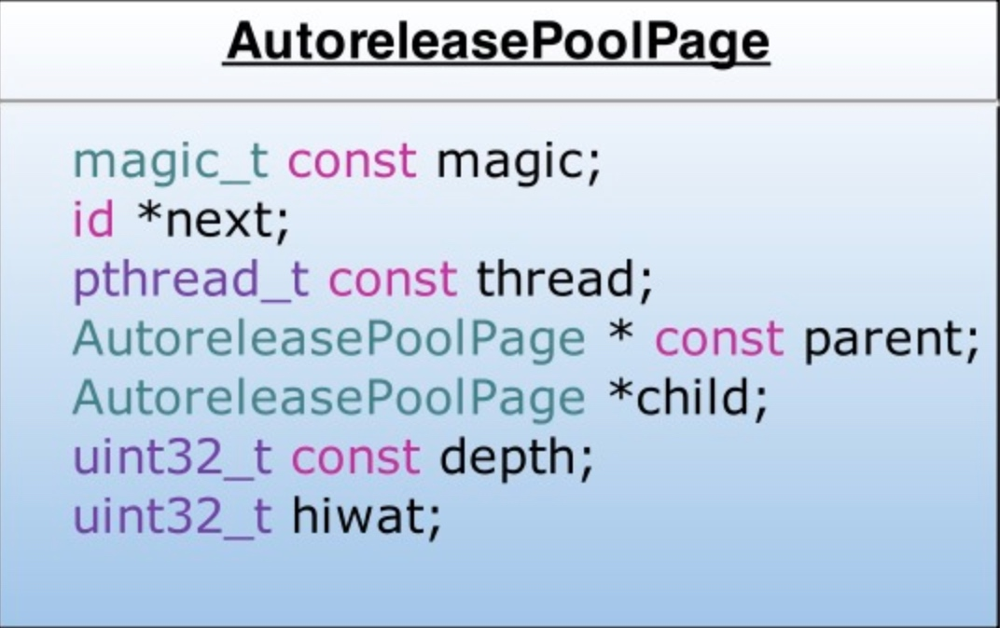
- AutoreleasePool并没有单独的结构,而是由若干个 AutoreleasePoolPage 以双向链表的形式结合而成(分别对应图中的 parent 和 child 指针)
- AutoreleasePool是按线程一一对应的(结构中的 thread 指向当前线程)
- AutoreleasePoolPage 每个对象会开辟 4096 个字节内存(一页虚拟内存的大小)除了上面的实例变量所占的空间,剩下的空间都用来存储 Autorelease对象
- 上面的 id *next 指针作为游标指向栈顶最新 add 进来的 Autorelease对象的下一个位置
- 一个 AutoreleasePoolPage 的空间被沾满时,会创建一个新的 AutoreleasePoolPage 对象,连接链表,后来的 Autorelease对象在新的 page 加入
所以若当前线程中只有一个 AutoreleasePoolPage 对象,并记录了很多 Autorelease对象地址时,内存:
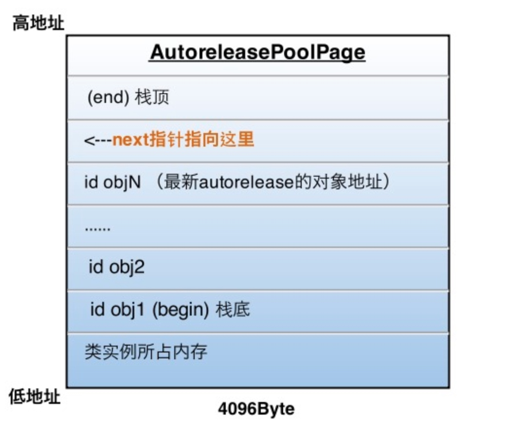
图中的情况，这一页再加入一个autorelease对象就要满了（也就是next指针马上指向栈顶），这时就要执行上面说的操作，建立下一页page对象，与这一页链表连接完成后，新page的next指针被初始化在栈底（begin的位置），然后继续向栈顶添加新对象。
向一个对象发送- autorelease消息，就是将这个对象加入到当前AutoreleasePoolPage的栈顶next指针指向的位置
这一步只是把 Autorelease对象加入到了自动释放池,还并没有释放
真正释放时刻
每当进行一次objc_autoreleasePoolPush调用时，runtime向当前的AutoreleasePoolPage中add进一个哨兵对象，值为0（也就是个nil），那么这一个page就变成了下面的样子：

objc_autoreleasePoolPush的返回值正是这个哨兵对象的地址，被objc_autoreleasePoolPop(哨兵对象)作为入参，于是：
- 根据传入的哨兵对象地址找到哨兵对象所处的page
- 在当前page中，将晚于哨兵对象插入的所有autorelease对象都发送一次- release消息，并向回移动next指针到正确位置
- 补充2：从最新加入的对象一直向前清理，可以向前跨越若干个page，直到哨兵所在的page
刚才的objc_autoreleasePoolPop执行后， 最终变成了下面的样子:
最终变成了下面的样子:

嵌套的AutoreleasePool
知道了上面的原理，嵌套的AutoreleasePool就非常简单了，pop的时候总会释放到上次push的位置为止，多层的pool就是多个哨兵对象而已，就像剥洋葱一样，每次一层，互不影响。

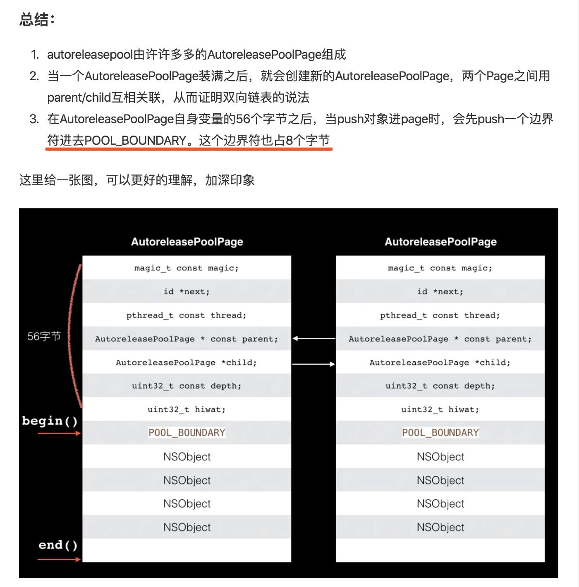
注意点:
NSAutoRelasePool对象执行销毁时[pool drain]后，自动释放池会把添加到该pool里面的所有OC对象都执行一遍release（retainCount-=1），如果恰好此时retainCount<=0 ，那么系统会自动调用dealloc方法废弃对象。
参考:
https://www.jianshu.com/p/61d8131c6bf3
https://blog.sunnyxx.com/2014/10/15/behind-autorelease/
https://juejin.im/post/5d7765756fb9a06af82503b6
RunLoop 详解
- RunLoop 概念
- RunLoop与线程的关系
## RunLoop 概念
一般来讲一个线程一次只能执行一个任务,执行完成后线程就会推出了,很明显,现在的 APP 都是不可能这种模式的,否则 APP 打开之后就死掉了,也就没有任何作用了.
现在的这种模式其实是一种循环模式,保持一个线程始终存在,然后再处理各种操作(功能)等.
现在 APP 的实现机制其实是需要线程能随时处理事件,但是并不退出,通常的代码逻辑是这样的:(伪代码) 从代码可以看出是一种循环机制.
从代码可以看出是一种循环机制.
这种模式通常被称为 EventLoop.iOS/OSX里的 runloop 就是这种模式.
这种模式的关键点:- 如何管理事件/消息
- 如何让线程在没有消息处理的时候休眠,避免占用资源
- 在有消息需要处理的时候立刻被唤醒(否则就是卡顿了)
所以 runloop 实际上就是一个对象,这个对象管理了需要其处理的事件和消息.并且提供了一个入口函数来执行上面的 EventLoop 逻辑.
线程执行了这个函数之后,就会一直处于这个函数内部"接受消息->等待->处理"的循环中,知道这个循环结束,函数返回.
OSX/iOS 中提供了两个这样对象:NSRunLoop,CFRunLoopRef .
- CFRunLoopRef 是在 CoreFoundation 框架内的,提供的纯 C 函数的 API,所有这些 API 都是线程安全的.
- NSRunLoop 是基于 CFRunLoopRef 的封装,提供了面向对象的 API,但是这些 API 不是线程安全的
RunLoop 与线程的关系
先给结论:
1. RunLoop 和线程是一一对应的.
2. RunLoop 和线程的对应关系保存在一个全局的字典里
3. 线程刚创建的时候是没有 RunLoop 的,如果不主动获取就一直不会有!
4. RunLoop 的创建是发生在第一次获取时.
5. RunLoop 的销毁是发生在线程结束时
6. 你只能在一个线程内部获取其 RunLoop(主线程除外)
7. 苹果并不允许主动创建 RunLoop,只提供了两个获取的函数:CFRunLoopGetMain(),CFRunLoopGetCurrent().

在 CoreFoundation 中关于 RunLoop 有 5 个类:
- CFRunLoopRef
- CFRunLoopModeRef
- CFRunLoopSourceRef
- CFRunLoopTimerRef
- CFRunLoopObserverRef
其中的 CFRunLoopModeRef 并没有对外暴露,只是通过 CFRunLoopRef 的接口对外进行了封装 一个 RunLoop 包含若干个 Mode，每个 Mode 又包含若干个 Source/Timer/Observer。每次调用 RunLoop 的主函数时，只能指定其中一个 Mode，这个Mode被称作 CurrentMode。
如果需要切换 Mode，只能退出 Loop，再重新指定一个 Mode 进入。这样做主要是为了分隔开不同组的 Source/Timer/Observer，让其互不影响。
一个 RunLoop 包含若干个 Mode，每个 Mode 又包含若干个 Source/Timer/Observer。每次调用 RunLoop 的主函数时，只能指定其中一个 Mode，这个Mode被称作 CurrentMode。
如果需要切换 Mode，只能退出 Loop，再重新指定一个 Mode 进入。这样做主要是为了分隔开不同组的 Source/Timer/Observer，让其互不影响。
CFRunLoopSourceRef 是事件产生的地方。Source有两个版本：Source0 和 Source1。
- Source0 只包含了一个回调(函数指针)
Source1 包含了一个回调(函数指针)和一个 mach_port
Source0 并不能主动触发事件,使用的时候需要先调用CFRunLoopSourceSignal(source)，将这个 Source 标记为待处理,然后手动调用CFRunLoopWakeUp(runloop) 来唤醒 RunLoop，让其处理这个事件。
Source1 能主动唤醒 RunLoop 的线程.通常用于内核和其他线程相互发送消息
CFRunLoopTimerRef 是基于时间的触发器,它和 NSTimer 是toll-free bridged 1 的,可以混用.其包含一个时间长度和一个回调(函数指针).当其加入 RunLoop 中时,RunLoop 会注册对应的时间点,当时间点到了,RunLoop 会被唤醒以执行那个回调.
CFRunLoopObserverRef 是观察者,每个 Observer 都包含了一个回调(函数指针),当 RunLoop 的状态发生变化时,观察者就能通过回调接受到这个变化.可以观察的时间点:

上面的 Source/Timer/Observer 被统称为 mode item，一个 item 可以被同时加入多个 mode。但一个 item 被重复加入同一个 mode 时是不会有效果的。如果一个 mode 中一个 item 都没有，则 RunLoop 会直接退出，不进入循环。
RunLoop 的 Mode
CFRunLoopMode 和 CFRunLoop 的结构大致如下：
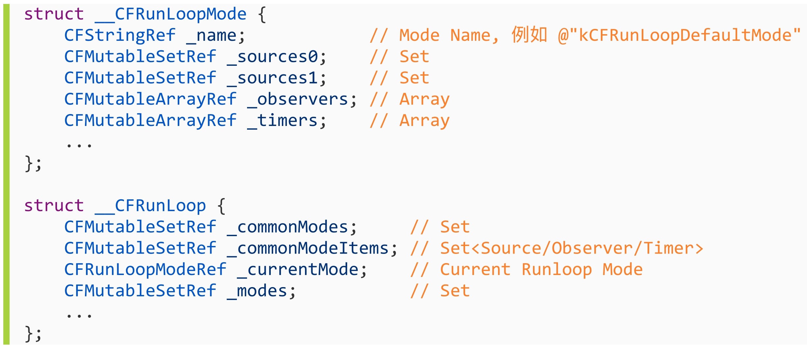
这里有一个概念叫"CommonModes":
一个 Mode 可以将自己标记为"common"属性(通过将其 ModeName 添加到 RunLoop 的"commonModes"中),每当 Runloop 的内容发生变化时,RunLoop 会自动将_commonModeItems 里的 Source/Obsever/Timer 同步到具有 Common 标记的所有 Mode 里


RunLoop 的内部逻辑
根据苹果在文档里的说明，RunLoop 内部的逻辑大致如下:

内部代码整理:

可以看到，实际上 RunLoop 就是这样一个函数，其内部是一个 do-while 循环。当你调用 CFRunLoopRun() 时，线程就会一直停留在这个循环里；直到超时或被手动停止，该函数才会返回。
苹果用 Runloop 实现的功能
- kCFRunLoopDefaultMode: App的默认 Mode，通常主线程是在这个 Mode 下运行的。
- UITrackingRunLoopMode: 界面跟踪 Mode，用于 ScrollView 追踪触摸滑动，保证界面滑动时不受其他 Mode 影响。
- UIInitializationRunLoopMode: 在刚启动 App 时第进入的第一个 Mode，启动完成后就不再使用。
4: GSEventReceiveRunLoopMode: 接受系统事件的内部 Mode，通常用不到。
5: kCFRunLoopCommonModes: 这是一个占位的 Mode，没有实际作用。
AutoreleasePool
App 启动之后,苹果在主线程 RunLoop 里注册了两个 Observer,这两个观察者的回调都是_wrapRunLoopWithAutoreleasePoolHandler().
- 第一个 Observer 监视的事件是 Entry(即将进入 Loop)其回调回调用_objc_autoreleasePoolPush()创建自动释放池,优先级最高,保证创建自动释放池在所有回调之前
- 第二个 Observer 监视了两个事件:
- BeforeWaiting(准备进入休眠)时调用_objc_autoreleasePoolPop()和_objc_autoreleasePoolPush()释放旧的池并创建新的自动释放池;
- Exit(退出Loop)时调用_objc_autoreleasePoolPop()释放自动释放池,这个 Observer 的优先级最低,保证释放自动释放池发生在所有回调之后
事件响应
苹果注册了一个 Source1 (基于 mach port 的) 用来接收系统事件，其回调函数为 __IOHIDEventSystemClientQueueCallback()。
当一个硬件事件(触摸/锁屏/摇晃等)发生后，首先由 IOKit.framework 生成一个 IOHIDEvent 事件并由 SpringBoard 接收。这个过程的详细情况可以参考这里。SpringBoard 只接收按键(锁屏/静音等)，触摸，加速，接近传感器等几种 Event，随后用 mach port 转发给需要的App进程。随后苹果注册的那个 Source1 就会触发回调，并调用 _UIApplicationHandleEventQueue() 进行应用内部的分发。
_UIApplicationHandleEventQueue() 会把 IOHIDEvent 处理并包装成 UIEvent 进行处理或分发，其中包括识别 UIGesture/处理屏幕旋转/发送给 UIWindow 等。通常事件比如 UIButton 点击、touchesBegin/Move/End/Cancel 事件都是在这个回调中完成的。
参考:
https://blog.ibireme.com/2015/05/18/runloop/
-
Toll-free bridging,简称为TFB，是一种允许某些ObjC类与其对应的CoreFoundation类之间可以互换使用的机制。比如 NSString与CFString是桥接(bridged)的, 这意味着可以将任意NSString当做CFString使用，也可以将任意的CFString当做NSString使用 ↩
Runtime

Runtime 的特性主要是消息（方法）传递，如果消息（方法）在对象中找不到，就会进行消息转发。
Runtime 介绍
Objective-C 拓展了 C语言，并且加入了面向对象特性和 SmallTalk 式的消息传递机制，而这个拓展的核心就是用 C 和编译语言写的Runtime库。Runtime是面向对象的基础。

Runtime 消息传递
一个对象的方法[obj foo]，编译器转成消息转发：objc_msgSend(obj, foo)
Runtime 执行的流程如下：
- 首先通过 obj 的 isa 指针， 找到他的 Class
- 在 class 的 methodlist（方法列表） 列表中找方法： foo
- 如果 class 中没有找到 foo，就向上去父类的方法列表中继续查找；
- 如果找到了就执行，去实现 IMP。

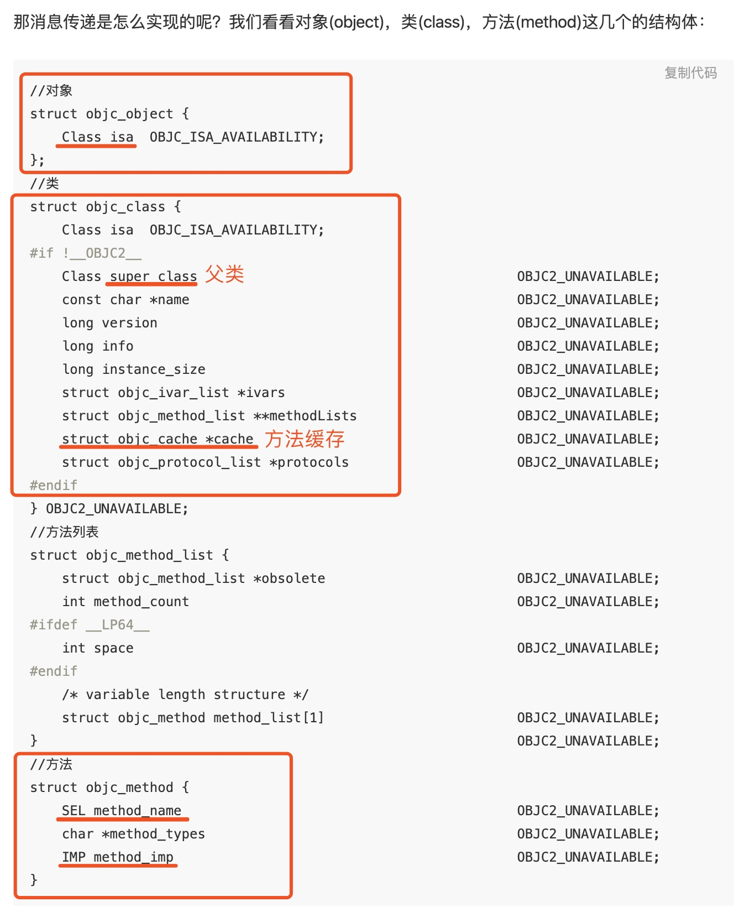
- 系统首先找到消息的接收对象,然后通过对象的 isa 找到他的类 class.
- 然后在他的类中查找 method_list,是否有 selector 方法
- 没有找到则继续查找父类的 method_list.
- 找到对应的 method,执行他的 IMP
- 转发 IMP 的 return 值.
下面讲一下消息传递中用到的概念:
- 类对象(objc_class)
- 实例对象(objc_object)
- 元类(Meta Class)
- Method(objc_method)
- SEL(objc_selector)
- IMP
- 类缓存(objc_cache)
- Category(objc_category)
类对象(objc_class)
在 OC 中类是有 Class 类型表示的,它实际上是一个指向 objc_class 的结构体指针
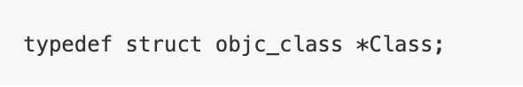

struct objc_class结构体定义了很多变量，通过命名不难发现，
结构体里保存了指向父类的指针、类的名字、版本、实例大小、实例变量列表、方法列表、缓存、遵守的协议列表等，
一个类包含的信息也不就正是这些吗？没错，类对象就是一个结构体struct objc_class，这个结构体存放的数据称为元数据(metadata)，
该结构体的第一个成员变量也是isa指针，这就说明了Class本身其实也是一个对象，因此我们称之为类对象，类对象在编译期产生用于创建实例对象，是单例。
实例(objc_object)

类对象中的元数据存储的都是如何创建一个实例相关的信息,那么类对象和类方法应该从哪里创建呢? 就是 isa 指针指向的结构体创建,类对象的 isa 指针指向的我们称为元类,元类中保存了创建类对象及类方法所需的所有信息,所以经典的那张图又来了:

元类(Meta Class)
通过上图我们可以发现整个体系构成了一个自闭环, struct objc_object 的结构体实例, 它的 isa 指向类对象,类对象的 isa 指向元类,super_class 指针指向父类的类对象,而元类的 super_class 的指针指向了父类的元类,那元类的指针又指向了自己.
元类是一个类对象的类,在上面我们提到所有的类自身也是一个对象,我们可以像这个对象发送消息(调用方法),为了调用类方法,这个类的 isa 指针必须指向一个包含这些类方法的一个 objc_class 结构体,这就引出了元类(meta-class)的概念.
元类中保存了创建类对象以及类方法所需的所有信息。 任何NSObject继承体系下的meta-class都使用NSObject的meta-class作为自己的所属类，而基类的meta-class的isa指针是指向它自己。

- SEL method_name 方法名
- char *method_types 方法类型
- IMP method_imp 方法实现

objc_msgSend 函数第二个参数类型为 SEL.它是 selector 在 OC 中的表示类型(Swift 中是 Selector 类).selector 是方法选择器,可以理解为区分方法的 ID,而这个 ID 的数据结构是 SEL.


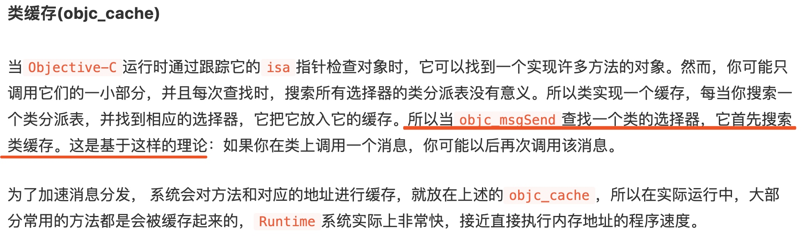

- name:是指 class_name 而不是 category_name。
- cls:要扩展的类对象，编译期间是不会定义的，而是在Runtime阶段通过name对 应到对应的类对象。
- instanceMethods：category中所有给类添加的实例方法的列表。
- classMethods：category中所有添加的类方法的列表。
- protocols：category实现的所有协议的列表。
- instanceProperties：表示Category里所有的properties，这就是我们可以通过objc_setAssociatedObject和objc_getAssociatedObject增加实例变量的原因，不过这个和一般的实例变量是不一样的。

Runtime 消息转发
消息转发的最后三次机会
- 动态方法解析
- 备用接受者
- 完整消息转发

动态方法解析
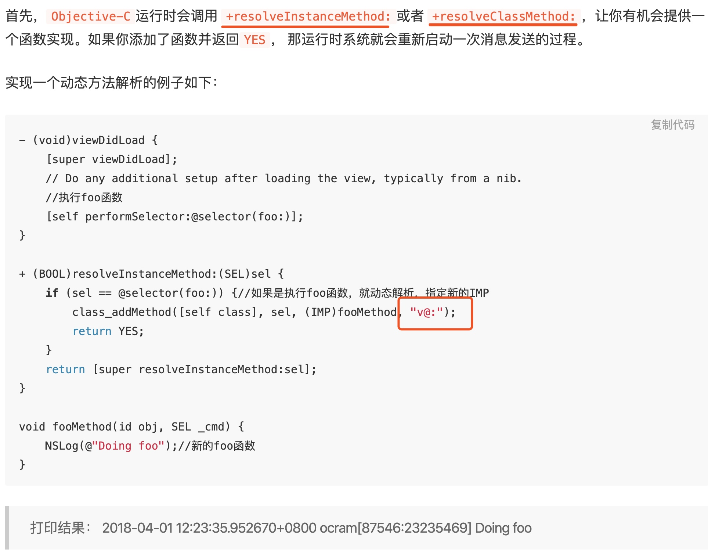
可以看到虽然没有实现foo:这个函数，但是我们通过class_addMethod动态添加fooMethod函数，并执行fooMethod这个函数的IMP。从打印结果看，成功实现了。
如果resolve方法返回 NO ，运行时就会移到下一步：forwardingTargetForSelector。
备用接受者
如果目标对象实现了-forwardingTargetForSelector:，Runtime 这时就会调用这个方法，给你把这个消息转发给其他对象的机会。
实现一个备用接收者的例子如下：

可以看到我们通过forwardingTargetForSelector把当前ViewController的方法转发给了Person去执行了。打印结果也证明我们成功实现了转发。
完整消息转发
如果在上一步还不能处理未知消息，则唯一能做的就是启用完整的消息转发机制了。
首先它会发送-methodSignatureForSelector:消息获得函数的参数和返回值类型。如果-methodSignatureForSelector:返回nil ，Runtime则会发出 -doesNotRecognizeSelector: 消息，程序这时也就挂掉了。如果返回了一个函数签名，Runtime就会创建一个NSInvocation 对象并发送 -forwardInvocation:消息给目标对象。

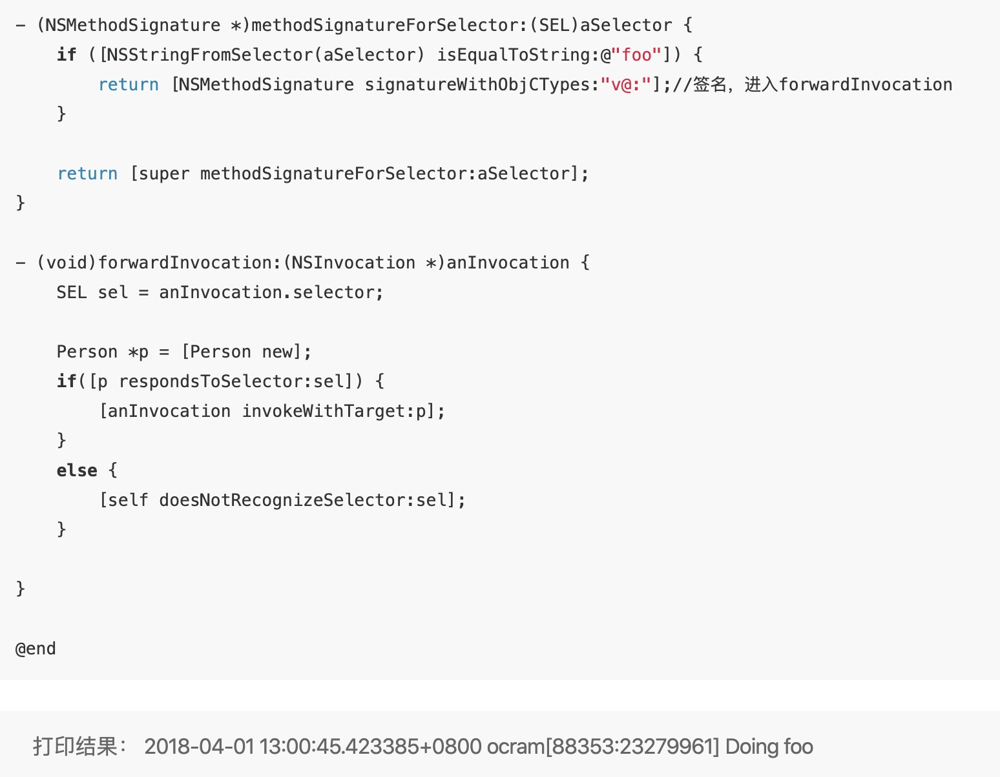
从打印结果来看，我们实现了完整的转发。通过签名，Runtime生成了一个对象anInvocation，发送给了forwardInvocation，我们在forwardInvocation方法里面让Person对象去执行了foo函数。签名参数v@:怎么解释呢，这里苹果文档Type Encodings有详细的解释。
以上就是Runtime的三次转发流程。下面我们讲讲Runtime的实际应用。

Runtime 应用
- AOP 面向切片编程(埋点方面用的比较多)


下面实现一个UIView的Category添加自定义属性defaultColor。
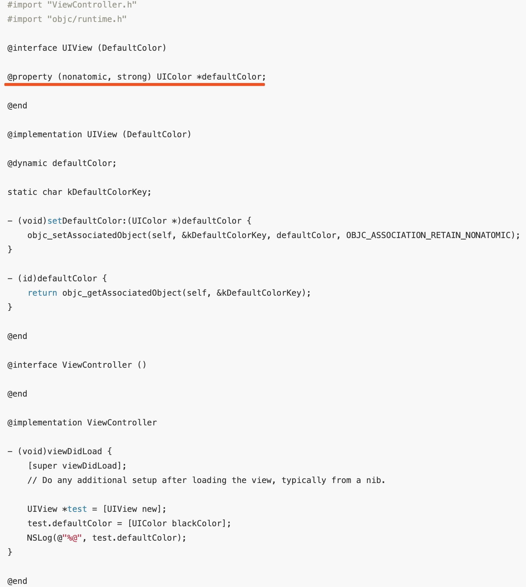


注:weak 的关联内存管理策略是什么?
https://dayon.gitbooks.io/-ios/content/chapter8.html
方法添加

方法替换
下面实现一个替换ViewController的viewDidLoad方法的例子。

swizzling应该只在+load中完成。 在 Objective-C 的运行时中，每个类有两个方法都会自动调用。+load 是在一个类被初始装载时调用，+initialize 是在应用第一次调用该类的类方法或实例方法前调用的。两个方法都是可选的，并且只有在方法被实现的情况下才会被调用。
swizzling应该只在dispatch_once 中完成,由于swizzling 改变了全局的状态，所以我们需要确保每个预防措施在运行时都是可用的。原子操作就是这样一个用于确保代码只会被执行一次的预防措施，就算是在不同的线程中也能确保代码只执行一次。Grand Central Dispatch 的 dispatch_once满足了所需要的需求，并且应该被当做使用swizzling 的初始化单例方法的标准。
KVO实现


注:
消息转发中"v@:"含义:
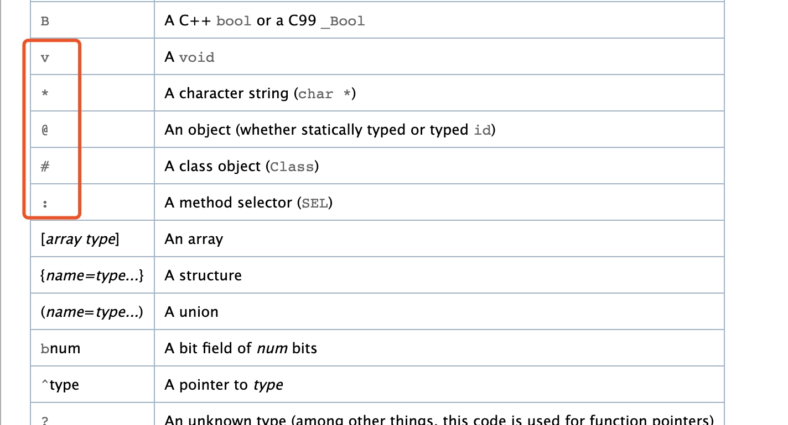
参考：
https://juejin.im/post/5ac0a6116fb9a028de44d717
https://bujige.net/blog/iOS-Runtime-01.html
https://developer.apple.com/library/archive/documentation/Cocoa/Conceptual/ObjCRuntimeGuide/Articles/ocrtTypeEncodings.html#//apple_ref/doc/uid/TP40008048-CH100
https://www.jianshu.com/p/ab966e8a82e2
KVO && KVC 实现原理

一、什么是 KVO？（Key-VauleObserving）
KVO 是 OC 对观察者模式的实现，也是 CocoaBinding 的基础，当被观察的对象的某个属性发生改变的时候，观察者对象就会获得通知
面试题：
addObserver:forKeyPath:options:context:各个参数的作用分别是什么, observer中需要实现哪个方法才能获得KVO回调？
**
1. self.person：要监听的对象
2. 参数说明：
* @param addObserver 观察者，负责处理监听事件的对象
* @param forKeyPath 要监听的属性
* @param options 观察的选项（观察新、旧值，也可以都观察）
* @param context 上下文，用于传递数据，可以利用上下文区分不同的监听
*/
[self.person addObserver:self
forKeyPath:@"name"
options:NSKeyValueObservingOptionNew | NSKeyValueObservingOptionOld
context:@"Person Name"];
/**
* 当监控的某个属性的值改变了就会调用
*
* @param keyPath 监听的属性名
* @param object 属性所属的对象
* @param change 属性的修改情况（属性原来的值`oldValue`、属性最新的值`newValue`）
* @param context 传递的上下文数据，与监听的时候传递的一致，可以利用上下文区分不同的监听
*/
- (void)observeValueForKeyPath:(NSString *)keyPath ofObject:(id)object change:(NSDictionary *)change context:(void *)context
{
NSLog(@"%@对象的%@属性改变了：%@", object, keyPath, change);
}
二、KVO 内部实现原理
官方文档的说法：
Automatic key-value observing is implemented using a technique called isa-swizzling.
KVO使用了名为isa-swizzling的技术The isa pointer, as the name suggests, points to the object's class which maintains a dispatch table. This dispatch table essentially contains pointers to the methods the class implements, among other data.
isa指针指向一个对象的类,这个类包含了一个方法派发表When an observer is registered for an attribute of an object the isa pointer of the observed object is modified, pointing to an intermediate class rather than at the true class. As a result the value of the isa pointer does not necessarily reflect the actual class of the instance.
被观察对象的isa指针会被修改,指向一个中间类,而非真实的类.isa指针的值并不必须反应实例对象的真实对应的类You should never rely on the isa pointer to determine class membership. Instead, you should use the class method to determine the class of an object instance.
因而,应该调用对象的class方法来确定实例对应的类而不是isa指针的值
KVO 是基于 runtime 机制实现的。
KVO 运用了一个 isa-swizzling 技术（类型混合指针机制），将两个对象的 isa 指针互相调换，就是俗称的黑魔法。
当某个类的对象 第一次被观察 的时候，系统就会在运行期动态的创建该类的一个派生类， 在这个派生类中重写基类中任何被观察属性的 setter 方法，派生类在被重写的 setter 方法内部实现真正的通知机制。
如果原类为Person，那么生成的派生类名为NSKVONotifying_Person
每个类对象中都有一个isa 指针指向当前类，当一个类对象的属性第一次被观察，那么系统就会将 isa 指针指向动态生成的派生类，从而在给被监控的属性赋值的时候执行的是派生类的 setter 方法。
键值观察通知（KVO）依赖于 NSObject 的两个方法：
willChangeValueForKey: 和 didChangevlueForKey：
当一个被观察的属性发生改变之前，willChangeValueForKey： 一定会被调用，这就会记录旧值，当发生改变之后，didChangevlueForKey：会被调用，继而observeValueForKey:ofObject:change:context: 也会被调用。
KVO 的这套实现机制中，苹果还偷偷实现了 class 方法，让我们误以为使用的还是当前的类，从而达到隐藏派生类的目的

三，如何手动触发 KVO
手动触发 KVO 必须实现两个方法：
willChangeValueForKey:和didChangeValueForKey:
- 如何自己动手实现 KVO？
1，Block 模拟实现 KVO
大体步骤：
1，创建 NSObject 的分类，增加添加观察者的 API，并实现
- (void)PG_addObserver:(NSObject *)observer
forKey:(NSString *)key
withBlock:(PGObservingBlock)block {
//检查对象的类有没有相应的 setter 方法。如果没有抛出异常；
SEL setterSelector = NSSelectorFromString(setterForGetter(key));
Method setterMethod = class_getInstanceMethod([self class], setterSelector);
if (!setterMethod) {
// throw invalid argument exception
}
Class clazz = object_getClass(self);
NSString *clazzName = NSStringFromClass(clazz);
// 检查对象 isa 指向的类是不是一个 KVO 类。如果不是，新建一个继承原来类的子类，并把 isa 指向这个新建的子类；
if (![clazzName hasPrefix:kPGKVOClassPrefix]) {
clazz = [self makeKvoClassWithOriginalClassName:clazzName];
object_setClass(self, clazz);
}
// 检查对象的 KVO 类重写过没有这个 setter 方法。如果没有，添加重写的 setter 方法；
// hasn't implemented the setter
if (![self hasSelector:setterSelector]) {
const char *types = method_getTypeEncoding(setterMethod);
class_addMethod(clazz, setterSelector, (IMP)kvo_setter, types);
}
// 添加这个观察者
PGObservationInfo *info = [[PGObservationInfo alloc] initWithObserver:observer Key:key block:block];
NSMutableArray *observers = objc_getAssociatedObject(self, (__bridge const void *)(kPGKVOAssociatedObservers));
if (!observers) {
observers = [NSMutableArray array];
objc_setAssociatedObject(self, (__bridge const void *)(kPGKVOAssociatedObservers), observers, OBJC_ASSOCIATION_RETAIN_NONATOMIC);
}
[observers addObject:info];
}
再来一步一步细看。
第一步里，先通过 setterForGetter() 方法获得相应的 setter 的名字（SEL）。也就是把 key 的首字母大写，然后前面加上 set 后面加上 :，这样 key 就变成了 setKey:。然后再用 class_getInstanceMethod 去获得 setKey: 的实现（Method）。如果没有，自然要抛出异常。
第二步，我们先看类名有没有我们定义的前缀。如果没有，我们就去创建新的子类，并通过 object_setClass() 修改 isa 指针。
- (Class)makeKvoClassWithOriginalClassName:(NSString *)originalClazzName {
NSString *kvoClazzName = [kPGKVOClassPrefix stringByAppendingString:originalClazzName];
Class clazz = NSClassFromString(kvoClazzName);
if (clazz) {
return clazz;
}
// class doesn't exist yet, make it
Class originalClazz = object_getClass(self);
Class kvoClazz = objc_allocateClassPair(originalClazz, kvoClazzName.UTF8String, 0);
// grab class method's signature so we can borrow it
Method clazzMethod = class_getInstanceMethod(originalClazz, @selector(class));
const char *types = method_getTypeEncoding(clazzMethod);
class_addMethod(kvoClazz, @selector(class), (IMP)kvo_class, types);
objc_registerClassPair(kvoClazz);
return kvoClazz;
}
动态创建新的类需要用 objc/runtime.h 中定义的 objc_allocateClassPair() 函数。传一个父类，类名，然后额外的空间（通常为 0），它返回给你一个类。然后就给这个类添加方法，也可以添加变量。这里，我们只重写了 class 方法。哈哈，跟 Apple 一样，这时候我们也企图隐藏这个子类的存在。最后 objc_registerClassPair() 告诉 Runtime 这个类的存在。
第三步，重写 setter 方法。新的 setter 在调用原 setter 方法后，通知每个观察者（调用之前传入的 block ）：
static void kvo_setter(id self, SEL _cmd, id newValue)
{
NSString *setterName = NSStringFromSelector(_cmd);
NSString *getterName = getterForSetter(setterName);
if (!getterName) {
// throw invalid argument exception
}
id oldValue = [self valueForKey:getterName];
struct objc_super superclazz = {
.receiver = self,
.super_class = class_getSuperclass(object_getClass(self))
};
// cast our pointer so the compiler won't complain
void (*objc_msgSendSuperCasted)(void *, SEL, id) = (void *)objc_msgSendSuper;
// call super's setter, which is original class's setter method
objc_msgSendSuperCasted(&superclazz, _cmd, newValue);
// look up observers and call the blocks
NSMutableArray *observers = objc_getAssociatedObject(self, (__bridge const void *)(kPGKVOAssociatedObservers));
for (PGObservationInfo *each in observers) {
if ([each.key isEqualToString:getterName]) {
dispatch_async(dispatch_get_global_queue(DISPATCH_QUEUE_PRIORITY_DEFAULT, 0), ^{
each.block(self, getterName, oldValue, newValue);
});
}
}
}
细心的同学会发现我们对 objc_msgSendSuper 进行类型转换。在 Xcode 6 里，新的 LLVM 会对 objc_msgSendSuper 以及 objc_msgSend 做严格的类型检查，如果不做类型转换。Xcode 会抱怨有 too many arguments 的错误。（在 WWDC 2014 的视频 What new in LLVM 中有提到过这个问题。）
最后一步，把这个观察的相关信息存在 associatedObject 里。观察的相关信息（观察者，被观察的 key, 和传入的 block ）封装在 PGObservationInfo 类里。
@interface PGObservationInfo : NSObject
@property (nonatomic, weak) NSObject *observer;
@property (nonatomic, copy) NSString *key;
@property (nonatomic, copy) PGObservingBlock block;
@end
就此，一个基本的 KVO 就可以 work 了。当然，这只是一个一天多做出来的小东西，会有 bug，也有很多可以优化完善的地方。但作为 demo 演示如何利用 Runtime 动态创建类、如何实现 KVO，足已。
- KVO 使用注意点
苹果提供的KVO自身存在很多问题，首要问题在于，KVO如果使用不当很容易崩溃。例如重复add和remove导致的Crash，Observer被释放导致的崩溃，keyPath传错导致的崩溃等。
在调用KVO时需要传入一个keyPath，由于keyPath是字符串的形式，所以其对应的属性发生改变后，字符串没有改变容易导致Crash。我们可以利用系统的反射机制将keyPath反射出来，这样编译器可以在@selector()中进行合法性检查。
KVO是一种事件绑定机制的实现，在keyPath对应的值发生改变后会回调对应的方法。这种数据绑定机制，在对象关系很复杂的情况下，很容易导致不好排查的bug。例如keyPath对应的属性被调用的关系很复杂，就不太建议对这个属性进行KVO，可以想一下RAC的信号脑补一下。
KVC 是什么
KVC（Key-value coding）键值编码，就是指iOS的开发中，可以允许开发者通过Key名直接访问对象的属性，或者给对象的属性赋值。而不需要调用明确的存取方法。这样就可以在运行时动态地访问和修改对象的属性。而不是在编译时确定，这也是iOS开发中的黑魔法之一。很多高级的iOS开发技巧都是基于KVC实现的。
KVC最为重要的四个方法：
- (nullable id)valueForKey:(NSString *)key; //直接通过Key来取值
- (void)setValue:(nullable id)value forKey:(NSString *)key; //通过Key来设值
- (nullable id)valueForKeyPath:(NSString *)keyPath; //通过KeyPath来取值
- (void)setValue:(nullable id)value forKeyPath:(NSString *)keyPath; //通过KeyPath来设值
isa 指针是什么类型的？
runtime 中，class 和 object 的定义：
typedef struct objc_class *Class;
typedef struct objc_object {
Class isa;
} *id;
Class 是一个 objc_class 结构类型的指针；
而 id（任意对象） 是一个 objc_object 结构类型的指针，其第一个成员是一个 objc_class 结构类型的指针。注意这里有一关键的引申解读：内存布局以一个 objc_class 指针为开始的所有东东都可以当做一个 object 来对待！
那 objc_class 又是怎样一个结构体呢？
struct objc_class {
struct objc_class* isa;
struct objc_class* super_class;
const char* name;
long version;
long info;
long instance_size;
struct objc_ivar_list* ivars;
struct objc_method_list** methodLists;
struct objc_cache* cache;
struct objc_protocol_list* protocols;
};
objc_class 结构体的各成员介绍如下：
isa：是一个 objc_class 类型的指针，看到这里，想起我前面的引申解读了没？内存布局以一个 objc_class 指针为开始的所有东东都可以当做一个 object 来对待！ 这就是说 objc_class 或者说类其实也可以当做一个 objc_object 对象来对待！对象是对象，类也是对象，是不是有点混淆？别急，ObjC发明（or 重用）了一个术语来区分这两种不同的对象：类对象（class object）与实例对象（instance object）。OK，名称混淆的问题解决，下面我将使用这两个术语来区分不同的对象，而使用“对象”这一术语来泛指所有的对象。ObjC还对类对象与实例对象中的 isa 所指向的类结构作了不同的命名：类对象中的 isa 指向类结构被称作 metaclass，metaclass 存储类的static类成员变量与static类成员方法（+开头的方法）；实例对象中的 isa 指向类结构称作 class（普通的），class 结构存储类的普通成员变量与普通成员方法（-开头的方法）。
super_class：一看就明白，指向该类的父类呗！如果该类已经是最顶层的根类（如 NSObject 或 NSProxy），那么 super_class 就为 NULL。
好，先中断一下其他类结构成员的介绍，让我们厘清一下在继承层次中，子类，父类，根类（这些都是普通 class）以及其对应的 metaclass 的 isa 与 super_class 之间关系:
规则一：类的实例对象的 isa 指向该类；该类的 isa 指向该类的 metaclass；
规则二：类的 super_class 指向其父类，如果该类为根类则值为 NULL；
规则三：metaclass 的 isa 指向根 metaclass，如果该 metaclass 是根 metaclass 则指向自身；
规则四：metaclass 的 super_class 指向父 metaclass，如果该 metaclass 是根 metaclass 则指向该 metaclass 对应的类；
好吧，文字总是那么乏力，有图有真相！

那么 class 与 metaclass 有什么区别呢？
class 是 instance object 的类类型。当我们向实例对象发送消息（实例方法）时，我们在该实例对象的 class 结构的 methodlists 中去查找响应的函数，如果没找到匹配的响应函数则在该 class 的父类中的 methodlists 去查找（查找链为上图的中间那一排）。如下面的代码中，向str 实例对象发送 lowercaseString 消息，会在 NSString 类结构的 methodlists 中去查找 lowercaseString 的响应函数。
metaclass 是 class object 的类类型。当我们向类对象发送消息（类方法）时，我们在该类对象的 metaclass 结构的 methodlists 中去查找响应的函数，如果没有找到匹配的响应函数则在该 metaclass 的父类中的 methodlists 去查找（查找链为上图的最右边那一排）。如下面的代码中，向 NSString 类对象发送 stringWithString 消息，会在 NSString 的 metaclass 类结构的 methodlists 中去查找 stringWithString 的响应函数。
参考：
https://www.jianshu.com/p/829864680648
https://xiaozhuanlan.com/topic/0892715634
https://tech.glowing.com/cn/implement-kvo/
https://juejin.im/post/5aeff463f265da0b851cc6ac
https://blog.csdn.net/Zsk_Zane/article/details/48194975
https://juejin.im/post/5aef18b76fb9a07aa34a28e6
探寻 OC 对象的本质
面试题：一个 NSObject 对象占用多少内存？
我们平时编写的代码都是 Objective-C 的代码，但是底层实现其实都是 C/C++的代码
#import <Foundation/Foundation.h>
#import <malloc/malloc.h>
#import <objc/runtime.h>
int main(int argc, const char * argv[]) {
@autoreleasepool {
NSObject *obj = [[NSObject alloc] init];
// 创建一个实例对象，实际上分配多少内存 - 16
NSLog(@"%zd", malloc_size((__bridge const void *)obj));
// 创建一个实例对象，至少需要多少内存 - 8
NSLog(@"%zd", class_getInstanceSize([NSObject class]));
}
return 0;
}
- 系统分配了 16 个字节给 NSObject 对象（通过 malloc——size 函数获得）
OC 源码显示分配给对象的内存为 16 个字节的整数倍，至少是 16 个字节

OC的对象、类主要是基于C\C++的什么数据结构实现的呢？
结构体
OC 的对象是基于 C 的结构体实现的
这个结构体只有一个成员：isa 指针，而指针在 64 位架构中占 8 个字节。
那么这个结构体占多大的内存空间呢，我们发现这个结构体只有一个成员，isa指针，而指针在64位架构中占8个字节。也就是说一个NSObjec对象所占用的内存是8个字节。到这里我们已经可以基本解答第一个问题。但是我们发现NSObject对象中还有很多方法，那这些方法不占用内存空间吗？其实类的方法等也占用内存空间，但是这些方法所占用的存储空间并不在NSObject对象中。
实例对象 类（对象） 元类

- instance的isa指向class
- class的isa指向meta-class
- meta-class的isa指向基类的meta-class，基类的isa指向自己
- class的superclass指向父类的class，如果没有父类，superclass指针为nil
- meta-class的superclass指向父类的meta-class，基类的meta-class的superclass指向基类的class
- instance调用对象方法的轨迹，isa找到class，方法不存在，就通过superclass找父类
- class调用类方法的轨迹，isa找meta-class，方法不存在，就通过superclass找父类
为什么会存在元类？
元类是一个类对象的类
简而言之：
当你向一个对象发送一条消息的时候，运行时会在对象的类的方法列表中查找这条消息是否存在。
当你向一个类发送一条消息的时候，运行时会在类的元类的方法列表中查找这条消息是否存在。
元类的存在是必需的，因为他存储了一个类的所有类方法。每个类的元类都是独一无二的，因为每个类都有一系列独特的类方法。
什么是元类的类
元类，和类一样，也是一个对象。这表示你能够对元类调用方法。自然的，这表示他必须也有一个类指针。
所有元类使用基类的元类（即继承链顶端的类的元类）作为他们的类，而所有类的基类都是 NSObject（大多数类是这样的），所以大多数元类使用 NSObject 的元类作为他的类。
根据规则所有元类使用基类的元类作为他们的类，那么基类的元类就是他自己的类（他们的isa指针指向了自己）。这表明NSObject的元类的指针指向的是他自己（他是一个他自己的实例）。
继承类和元类
同样的，类使用 super_class 指针指向他们的 superclass，元类也有 super_class 指针来指向 superclass。
这里又有一个奇怪的地方，基类的元类设置的 superclass 是基类自己。
这种继承结构导致的结果是所有结构中的实例、类以及元类都继承自结构中的基类。
所有实例、类和元类都在 NSObject 的层级下，这表明所有 NSObject 的实例方法都能够被使用，同样的，对类以及元类来说，所有 NSObject 的类方法也是有效的。
元类总结：
元类是一个类对象的类。每一个类有他自己独一无二的元类（因为每个类能够有自己独一无二的方法列表）。这就意味着类对象的类并不是和他们一样的类。
元类能确保类对象有所有底层类的实例和类方法，中间加上所有自己的类方法。所有类继承自NSObject，这意味着NSObject所有的实例和协议方法为所有类（和元类）对象都定义了。
所有元类使用基类的元类（NSObject 元类）来作为他们的类，包括只在运行时自定义的类的元类。
参考：
https://juejin.im/post/5ac81c75518825556534c0af
https://www.jianshu.com/p/79b06fabb459
属性的实质
属性的实质是什么？
包括哪几个部分？
属性默认的关键字都有哪些？
@dynamic关键字和@synthesize关键字是用来做什么的
实质包含部分:
@property = ivar + getter + setter;
实例变量+get方法+ set方法，也就是说使用@property系统会自动生成setter和getter方法;
默认常用关键字:
property中我们经常使用的关键字有strong，weak，assign，copy，nonatomic，atomic....等
@dynamic这个关键词，通常是用不到的。
它与@synthesize的区别在于：
使用@synthesize编译器会确实的产生getter和setter方法，而@dynamic仅仅是告诉编译器这两个方法在运行期会有的，无需产生警告。
假设有这么个场景，B类，C类分别继承A类，A类实现某个协议（@protocol），协议中某个属性( somePropety )我不想在A中实现，而在B类，C类中分别实现。如果A中不写任何代码，编译器就会给出警告：“use @synthesize, @dynamic or provide a method implementation"这时你给用@dynamic somePropety;
编译器就不会警告，同时也不会产生任何默认代码。
@dynamic 就是要来告诉编译器，代码中用@dynamic修饰的属性，其getter和setter方法会在程序运行的时候或者用其他方式动态绑定，以便让编译器通过编译。
其主要的作用就是用在NSManageObject对象的属性声明上，由于此类对象的属性一般是从Core Data的属性中生成的，Core Data框架会在程序运行的时候为此类属性生成getter和Setter方法。
参考:
https://www.jianshu.com/p/00dbeec23291
iOS 响应者链及事件传递
UIResponder
在 iOS中，所有响应事件处理事件的对象都直接或间接的继承UIResponder。
在 iOS 视图结构中，呈现出来的是一个 N 叉树的树形结构，每个视图都只有一个父视图，可以有多个子视图。

寻找第一响应者
当用户点击某个视图或者按钮的时候，会首先响应 applocation 中的 UIWindow 一层一层的向下查找，直到找到点击的 view，这阶段用到的两个方法：
- (UIView *)hitTest:(CGPoint)point withEvent:(UIEvent *)event; // recursively calls -pointInside:withEvent:. point is in the receiver's coordinate system
- (BOOL)pointInside:(CGPoint)point withEvent:(UIEvent *)event; // default returns YES if point is in bounds
例如有这样一个图层结构：

在上图中用户点击视图中的ViewD时，UIWindow首先接收到响应，此响应包括用户点击的区域和一个封装好的UIEvent对象，然后UIWindow通过这些信息利用以下方法查找：
UIWindow会通过调用pointInside:withEvent:方法返回的YES得知用户点击的范围在ViewA中；
ViewA调用hitTest:withEvent:方法，在方法中遍历所有的subView(ViewB、ViewC)调用hitTest:withEvent:方法；
在遍历中发现使用ViewC调用pointInside:withEvent:方法时返回YES，得知用户点击在ViewC范围之内；
ViewC调用hitTest:withEvent:方法，在方法中遍历所有的subView(ViewD、ViewE)调用hitTest:withEvent:方法;
在遍历中发现使用ViewD调用pointInside:withEvent:方法时返回YES，得知用户点击在ViewD范围之内;
在ViewD调用hitTest:withEvent:方法之前发现View的subViews的count为0，故确定用户点击在ViewD之上。
UIWindow会用遍历subviews，使用每一个subview调用hitTest:withEvent:方法，如果用户点击在某一个subview上，pointInside:withEvent:方法返回YES，再用这个subview调用hitTest:withEvent:方法，依次类推，直到当前view没有子view或点击的位置没有在其任何子view之上，便确定用户点击在某view上
- (UIView *)hitTest:(CGPoint)point withEvent:(UIEvent *)event{
for (UIView *view in self.subviews) {
if([view pointInside:point withEvent:event]){
UIView *hitTestView = [view hitTest:point withEvent:event];
if(nil == hitTestView){
return view;
}
}
}
return nil;
}
1.Alpha=0、子视图超出父视图的情况、userInteractionEnabled=NO、hidden=YES视图会被忽略，不会调用hitTest
2.父视图被忽略后其所有子视图也会被忽略
3.出现视图无法响应的情况，可以考虑上诉情况来排查问题
事件传递
事件传递的顺序其实就是寻找第一响应者的逆序，当找到了第一响应（View，button）之后，响应者就要对事件作出响应，这里就是使用了 UIResponder 的 nextResponder 方法。
nextResponder 的规则
因为UIView和UIViewController都是继承于UIResponder，所以在调用nextResponder时有几条规则如下：
当一个view调用其nextResponder会返回其superView;
如果当前的view为UIViewController的view被添加到其他view上，那么调用nextResponder会返回当前的UIViewController，而这个UIViewController的nextResponder为view的superView；
如果当前的UIViewController的view没有添加到任何其他view上，当前的UIViewController的nextResponder为nil，不管它是keyWinodw或UINavigationController的rootViewController，都是如此；
如果当前application的keyWindow的rootViewController为UINavigationController(或UITabViewController)，那么通过调用UINavigationController(或UITabViewController)的nextResponder得到keyWinodw；
keyWinodw的nextResponder为UIApplication，UIApplication的nextResponder为AppDelegate，AppDelegate的nextResponder为nil。
通过知道了上述规则，便可以通过用户点击的ViewD，查看ViewD是否响应了点击事件，如果没有找它的nextResponder，如果没有再继续找，直到找到AppDelegate再没有响应，则此点击事件被系统丢弃，大致流程如下：

事件响应链的大致流程就是如此了，大概就是一个先向下找，再向上找的过程！
无法响应的情况
Copyright © 2015 Powered by MWeb, Theme used GitHub CSS.